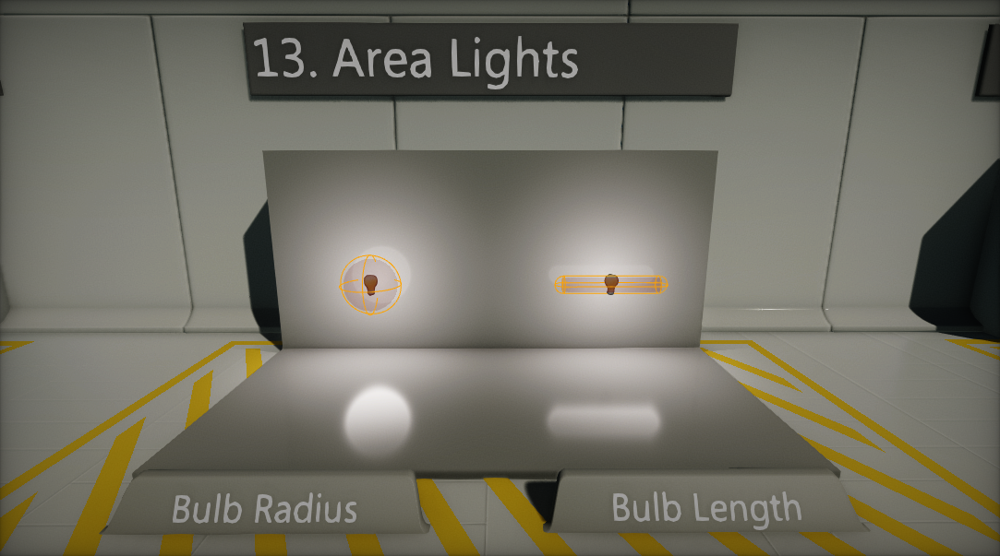
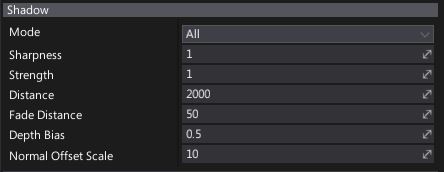

Point Light
A Point Light emits light from a single point in all directions. Point Lights are useful for simulating sources of local light, such as lamps and lightbulbs.
Light Properties
| Property | Description |
|---|---|
| Radius | Light range (in world units). |
| Source Radius | Light build source radius (in world units). |
| Source Length | Light build source length (in world units). |
| Fall Off Exponent | Controls the radial falloff of the light. Works only if the option Use Inverse Squared Falloff is disabled. |
| Use Inverse Squared Falloff | If checked, physically based inverse squared distance falloff will be used. |
| Color | Light emission color. |
| Brightness | Light brightness parameter. Controls intensity of the light emitted by this actor. |
| View Distance | Controls light visibility range. The distance at which the light becomes completely faded. Use a value of 0 to always draw a light. |
| Minimum Roughness | Controls the minimum roughness value used to clamp material surface roughness during shading. Can help with softening specular highlights. |
Area Lights
By using the Source Radius and Source Length properties you can change the point light source build dimensions. This allows simulating area lights and brings more realism into the scenes.

Light Fall Off
Flax offers two modes for light fall off. A custom Exponent parameter can be used or use the Inverse Squared Falloff mode. Inverse squared mode gives a more physically based distance falloff, where Radius is only clamping the light's contribution. Hovewer using the manual light falloff exponent gives more customization options.
Shadow Properties

| Property | Description | ||||||||||
|---|---|---|---|---|---|---|---|---|---|---|---|
| Mode | Describes how a visual element casts shadows. Possible options:
|
||||||||||
| Sharpness | Controls shadow sharpness. Can be used to tweak the penumbra width. | ||||||||||
| Strength | Controls dynamic shadow blending strength. Default is 1 for fully opaque shadows, a value of 0 disables shadows. | ||||||||||
| Distance | Shadow rendering distance (in world units). | ||||||||||
| Fade Distance | Shadow fade off distance (in world units). | ||||||||||
| Depth Bias | Controls dynamic shadow depth bias value. Depth bias is used for shadow map comparison. | ||||||||||
| Normal Offset Scale | Controls dynamic shadows normal vector offset scale. A factor specifying the offset to add to the calculated shadow map depth with respect to the surface normal. | ||||||||||
| Contact Shadows Length | The length of the rays for contact shadows computed via screen-space tracing. Set this to values higher than 0 to enable screen-space shadow rendering for this light. This improves the shadowing details. Actual ray distance is based on the pixel distance from the camera. | ||||||||||
| Update Rate | Frequency of shadow updates. 1 - every frame, 0.5 - every second frame, 0 - on start or change. It's the inverse value of how many frames should happen in-between shadow map updates (eg. inverse of 0.5 is 2 thus shadow will update every 2nd frame). | ||||||||||
| Update Rate At Distance | Frequency of shadow updates at the maximum distance from the view at which shadows are still rendered. This value is multiplied by Shadows Update Rate and allows scaling the update rate in-between the shadow range. For example, if light is near view, it will get normal shadow updates but will reduce this rate when far from view. | ||||||||||
| Resolution | Defines the resolution of the shadow map texture used to draw objects projection from light-point-of-view. Higher values increase shadow quality at cost of performance. |
Note
To learn more about shadows in Flax see this page.
Volumetric Fog Properties

| Property | Description |
|---|---|
| Scattering Intensity | Controls how much this light will contribute to the Volumetric Fog. When set to 0, there is no contribution. |
| Cast Shadow | If checked, light will cast a volumetric shadow to Volumetric Fog. Also shadow casting by this light should be enabled in order to make it cast volumetric fog shadows. |
Note
To learn more about Volumetric Fog effect see this page.
IES Profile Properties
| Property | Description |
|---|---|
| IES Texture | Assigned IES texture (light profiles from real world measured data). Learn more about it here. |
| Use IES Brightness | If checked, light brightness will be based on imported IES Profile brightness. Then use the Brightness Scale parameter to scale it. |
| Brightness Scale | Custom scale parameter for light brightness if the option Use IES Brightness is checked. |
Note
To learn more about IES Light Profiles see this page.